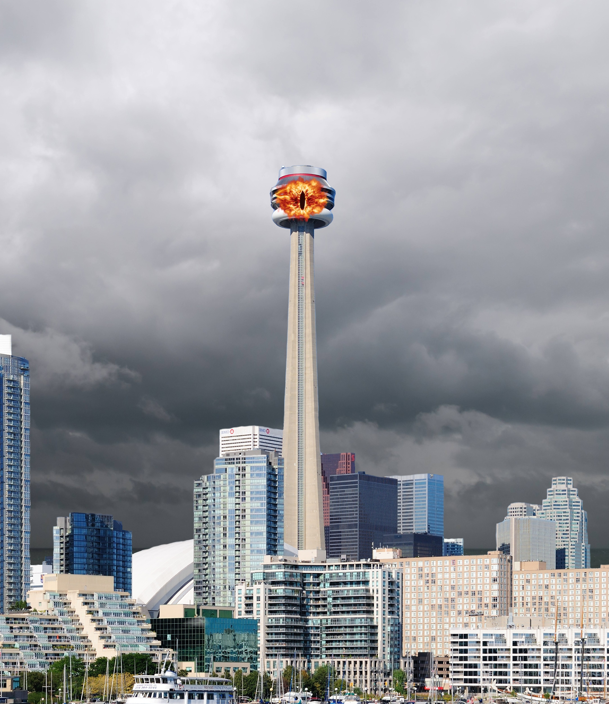

Podle nových fotografií se na slavné torontské věži objevilo děsivé oko! Co to znamená?
Úkol: Ověřte pravost této fotografie a zjistěte, kde byla původně pořízena!
Objevily se spekulace, že jde o varování elit, nebo snad symbol tajné organizace ovládající svět? Někteří svědci tvrdí, že v noci věž skutečně září nadpřirozenou energií. Proč o tom média mlčí? Hledejte pravdu!